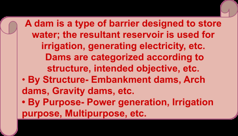
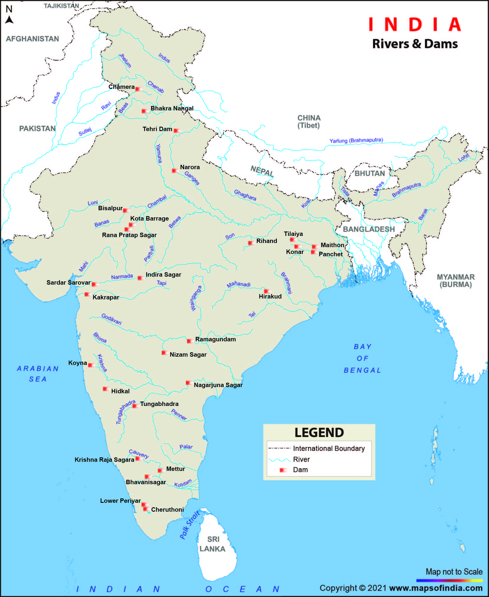
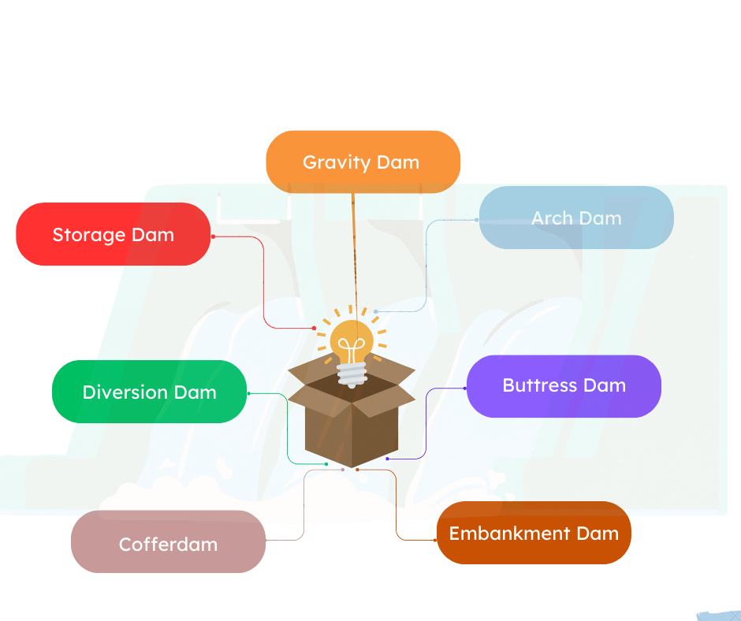
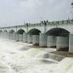
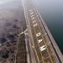
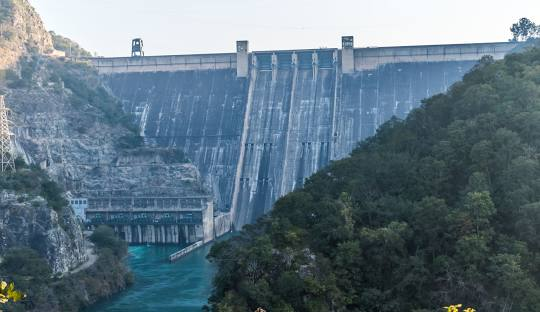
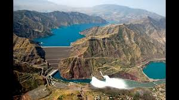
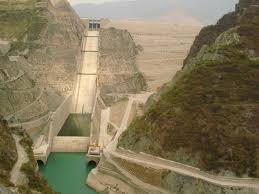

09 Dams In India
Dams in India

There is a lot of speculation about the origin of dams, some strong pieces of evidence in history point out to the Jawa Dam which was constructed in 3000 BCE After the success of the Jawa Dam, Egyptians built the Sadd el-Kafara, or Dam of the Pagans, which was mainly for irrigation purposes. In the current era, the Quatinah Barrage or Lake Homs Dam, located in Syria, is the oldest operational dam in the world. In India, the oldest dam is the Grand Anicut Dam or Kallanai Dam which was built on the Cauvery River by King Karikalan of the Chola dynasty in the first century. This dam was built with uneven stones and stands at a length of 329 meters and a width of 20 meters. The main intention of this dam was to divert the water across the delta for i rrigation purposes.

List of Dams in India with River and State
| State | Dam | River |
|---|---|---|
| Andhra Pradesh | Somasila Dam | Penna River |
| Polavaram Project | Godavari River | |
|---|---|---|
| Nagarjuna Sagar Dam | Krishna River | |
| Srisailam Dam | Krishna River | |
| Arunachal Pradesh | Kohira Dam | Kohira River |
| Bihar | Nagi Dam | Nagi River |
| Ranganadi Dam | Ranganadi River | |
| Chhattisgarh | Dudhawa Dam | Mahanadi River |
| Minimata (Hasdeo) Bango Dam | Hasdeo River | |
| Gujarat | Aji Dam | Aji River |
| Sipu Dam | Sipu River | |
| Mitti Dam | Mitti River | |
| Karjan Dam | Karjan River | |
| Kadana Dam | Mahi River | |
| Sardar Sarovar Dam | Narmada River | |
| Ukai Dam | Tapti River | |
| Himachal Pradesh | Chamera Dam | Ravi River |
| Nathpa Jhakri (Sjvnl) Dam | Satluj River | |
| Pong Dam | Beas River | |
| Bhakra Dam | Satluj River | |
| Kol Dam | Satluj River | |
| Jammu and Kashmir | Pakal Dul Dam | Marusudar River |
| Kishenganga Dam | Kishenganga River | |
| Nimoo Bazgo Dam | Indus River | |
| Uri Dam | Jhelum River | |
| Salal Dam | Chenab River | |
| Baglihar Dam | Chenab River |
| Jharkhand | Konar Dam | Konar River |
|---|---|---|
| North Koel Dam | North Koel River | |
| Tenughat Dam | Damodar River | |
| Maithon Dam | Barakar River | |
| Panchet Dam | Damodar River | |
| Karnataka | Lakhya Dam | Lakhya Hole |
| Tungabhadra Dam | Tungabhadra River | |
| Almatti Dam | Krishna River | |
| Kabini Dam | Kabini River | |
| Supa Dam | Kalinadi River | |
| Hidkal Dam | Ghataprabha River | |
| Hemavathy Dam | Hemavathy River | |
| Bhadra Dam | Bhadra River | |
| Basava Sagar Dam (Narayanpur Dam) | Krishna River | |
| Krishnarajasagar Dam | Cauvery River | |
| Kerala | Idukki Dam | Periyar River |
| Cheruthoni Dam | Cheruthoni River | |
| Kakki Dam | Kakki River | |
| Kulamavu Dam | Kilivillithode | |
| Mullaperiyar Dam | Periyar River | |
| Madhya Pradesh | Ban Sagar Dam | Son River |
| Gandhi Sagar Dam | Chambal River | |
| Indira Sagar Dam | Narmada River | |
| Omkareshwar Dam | Narmada River | |
| Tawa Dam | Tawa River | |
| Maharashtra | Bhatsa Dam | Bhatsa and Chorna Rivers |
| Koyna Dam | Koyna River | |
|---|---|---|
| Warna Dam | Warna River | |
| Ujjani Dam | Bhima River | |
| Aruna Dam | Aruna River | |
| Upper Wardha Dam | Wardha River | |
| Odisha | Hirakud Dam | Mahanadi |
| Indravati Dam | Indravati | |
| Kapur Dam | Kapur | |
| Podagada Dam | Podagada | |
| Rengali Dam | Brahmani | |
| Upper Kolab Dam | Kapur | |
| Haladia Dam | Haladia | |
| Lower Indra Dam | Indra | |
| Punjab | Ranjit Sagar Dam | Ravi |
| Rajasthan | Bisalpur Dam | Banas |
| Jawahar Sagar Dam | Chambal | |
| Mahi Bajaj Sagar Dam | Mahi | |
| Rana Pratap Sagar Dam | Chambal | |
| Jaswant Sagar Dam | Luni | |
| Jakham Main Dam | Jakham (Mahi) | |
| Sikkim | Rangit III Dam | Ranjit |
| Tamil Nadu | Bhavani Dam | Bhavani |
| Mettur Dam | Kaveri | |
| Sholaiyar Dam | Sholaiyar | |
| Pillur Dam | Bhavani | |
| Telangana | Nagarjuna Sagar Dam | Krishna |
| Srisailam Dam | Krishna | |
|---|---|---|
| Nizam Sagar Dam | Manjira | |
| Musi Dam | Musi | |
| Singur Dam | Manjira | |
| Sri Rama Sagar Dam (Pochampadu Project) | Godavari | |
| Uttarakhand | Jamrani Dam | Gola |
| Lakhwar Dam | Yamuna | |
| Koteshwar Dam | Bhagirathi | |
| Ramganga Dam | Ramganga | |
| Tehri Dam | Bhagirathi | |
| Uttar Pradesh | Rihand Dam | Rihand |
| West Bengal | Kangsabati Kumari Dam | Kasai |
Types of Dams

Gravity Dam: ➢ Description: These dams are heavy and massive, using their own weight to resist the force of water. Example: Bhakra Dam in India. Arch Dam: ➢ Description: Curved in shape, these dams transfer water pressure to the valley walls. Example: Idukki Dam in India. Buttress Dam: ➢ Description: Supported by multiple triangular-shaped walls (buttresses) on the downstream side. Example: Tehri Dam in India. Embankment Dam: ➢ Description: Made from compacted earth (earthfill) or rock (rockfill). These are the most common types of dams. Example: Hirakud Dam in India (earth fill). Cofferdam: ➢ Description: Temporary structures designed to keep the water out of the construction area. Example: Used during the construction of permanent dams. Diversion Dam: ➢ Description: Redirects the flow of a river or stream into a different channel. Example: Sardar Sarovar Dam in India. Storage Dam: ➢ Description: Created primarily to store water for irrigation, water supply, and hydroelectric power. Example: Nagarjuna Sagar Dam in India.
Interesting Facts about Dams in India
| Fact | Dam | Description | Image |
|---|---|---|---|
| First dam in India | Kallanai Dam (Grand Anicut) | Located on the river Kaveri in Tiruchirapalli, Tamil Nadu. Built around the 2nd century AD. | |
| Longest dam in the world | Hirakud Dam | Located in Odisha, it stretches across 25.8 km. | |
| Longest dam in India | Hirakud Dam | The same as above; it holds the record in both categories. | |
| Highest straight gravity dam in India | Bhakra Dam | Located on the Sutlej River in Himachal Pradesh, standing 225 meters high. | |
| Tallest dam in the world | Nurek Dam | Situated in Tajikistan, with a height of 300 meters. |





Located in Uttarakhand, Highest dam in Tehri Dam it stands at 260.5 meters India high.
Tehri Dam
The Tehri Dam is located in the state of Uttarakhand. It is the highest dam in India with a height of 260.5 metres. It is situated on the river Bhagirathi.
Height of the Dam- 260.5 m Length of the Dam- 575 m Type of Dam- Rock fill Reservoir capacity- 21,00,000 acre feet Installed capacity 1000 MW
Bhakra Nangal Dam
The Bhakra Nangal Dam is located in the states of Himachal Pradesh and Punjab. It is the largest dam in India having a height of 225 metres. It is situated on the river Sutlej.
Height of the Dam- 226 m Length of the Dam- 520m Type of Dam- Concrete Gravity Reservoir capacity- 75,01,775 acre feet Installed capacity- 1325 MW
Hirakud Dam
The Hirakud Dam is located in the state of Orissa. It is the longest dam in India with a total length of 25.79 km. It is situated on the river Mahanadi.
Height of the Dam- 61 m Length of the Dam- 4.8 km (Main Dam) Type of Dam- Composite Dam Reservoir capacity- 47,79,965 acre feet Installed capacity- 347.5 MW
Nagarjuna Sagar Dam
The Nagarjuna Sagar Dam is located in the state of Telangana. It is India’s largest masonry dam built till date. It is the largest manmade lake in the world. It has 26 gates and is 1.55 km in length. It is situated on the river Krishna.
Height of the Dam- 124m Length of the Dam- 4.863 km (Total Length) Type of Dam- Masonry Dam Reservoir capacity- 93,71,845 acre feet Installed capacity- 816 MW
Sardar Sarovar Dam
The Sardar Sarovar Dam is located in the state of Gujarat. It is the largest dam in the Narmada Valley Project. This dam was built to benefit the neighbouring states of Madhya Pradesh, Rajasthan and Maharashtra. It is situated on the Narmada river.
Height of the Dam- 163m Length of the Dam- 1210m Type of Dam- Gravity Dam Reservoir capacity- 77,00,000 acre-feet Installed capacity- 1450 MW
Indiranagar Dam
The Indira Sagar Dam is a multipurpose concrete gravity dam in Madhya Pradesh over the Narmada River in the town of Narmada Nagar. The dam contains the largest reservoir in India in terms of water storage capacity. Height of the dam 92m Length of the dam 653m Type of dam Gravity Dam Reservoir capacity 12.2 billion cu.m Installed capacity: 1000 MW